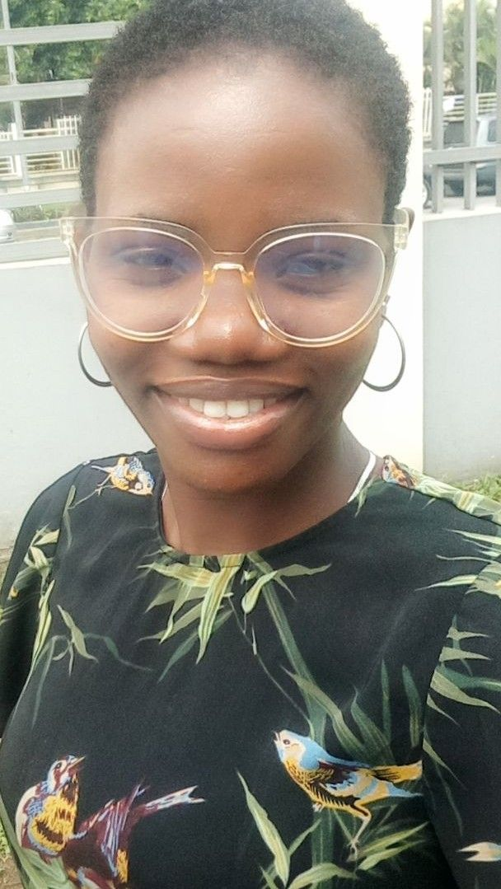

About Me

My name is Elizabeth popularly known as Shade. I'm currently a student at Brigham Young University and also work as a hairstylist at a barbershop. I was born in Lagos but currently live in Port Harcourt, Nigeria with my children (two boys to be precise). I'm passionate about learning, exploring new things and environment.
Port Harcourt, Nigeria
Port Harcourt, founded in 1912 and located in Rivers State, is Nigeria's primary oil-producing hub and the fifth most populous city. Known as the "Garden City" for its green spaces, it serves as a crucial industrial center with major shipping ports, refineries, and the Trans-Amadi Industrial Estate. As a capital city with an estimated urban population of over 3 million, it is a bustling, diverse metropolis in the Niger Delta region.